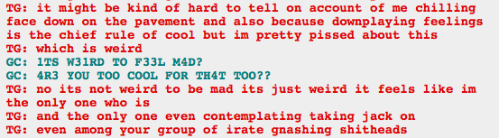
You are definitely not the only one, Dave. God, everybody keeps doing stupid things because they’re not talking about their feelings!
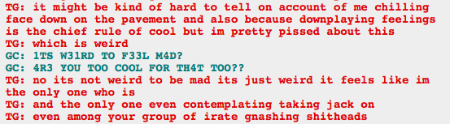
You are definitely not the only one, Dave. God, everybody keeps doing stupid things because they’re not talking about their feelings!
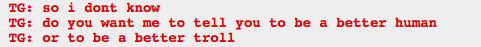
If I wasn’t going through this as quickly as possible I might have something interesting to say about the fact that the trolls, most of them, act pretty human, and they all seem to know it.
It’s probably been said a thousand times already, though. There seems to be a lot of Homestuck meta.
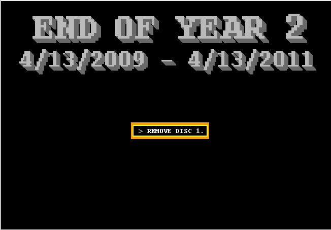
Holy shit, seriously?
Seer: Ascend.
I was expecting something big to happen, so my response probably leaves a bit to be desired. :(

I am dead of the incredible cute here. Awww! Terezi, queen of my heart!
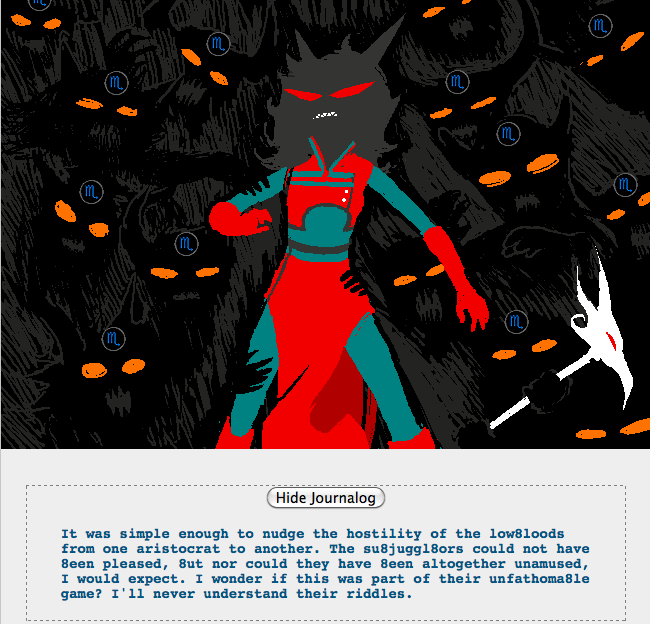
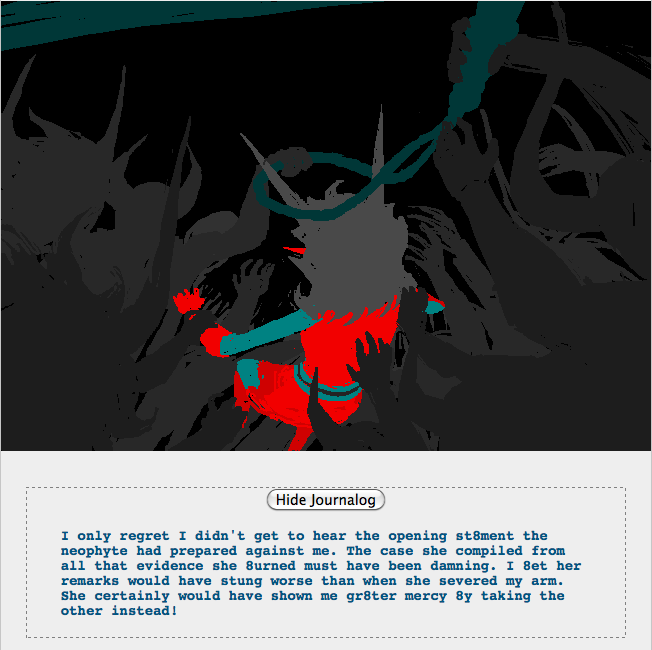
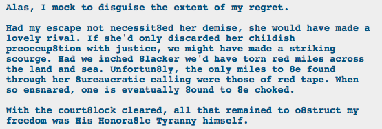
Noooooooooooo!
Also given the allegory that means that Terezi’s attempt to kill Vriska is going to go reeeeally badly for Terezi. I am not okay with that.
…If Vriska and Terezi are kismesis, and Vriska and John, Terezi and Dave are matesprites, what does that mean about John and Dave?

Out of order liveblogging since I saved this cap in a different place!
This is an awesome revelation to me! I mean, I know that Doc Scratch is immortal and has existed since the beginning of Alternia, but I totally hadn’t thought of him interacting with the trolls’ ancestors. But there he is, mentoring Vriska’s ancestor whose name I can’t remember, and she steals one of his magic cue balls. Very cool.

GASP
That is so obvious in retrospect. Of course. Of course. How did I not see that?
He knew all along how this would go.
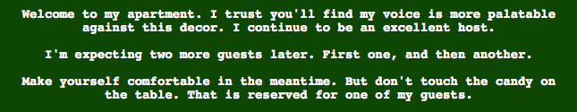
I’m not sure why, but I got ridiculously happy when the entire page turned green. Funny.

Oh, clever!
Rose is the seer of light! She’s kind of a combination of Vriska (thief of light) and Terezi (seer of mind), or at least their roles.
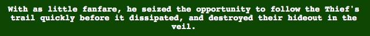
Well, what did Vriska think was going to happen? Terezi did warn her. Vriska needs to trade some of her luck for a thinking things through skill.

Oh shit oh shit oh shit oh shit oh shit oh shit oh shit.
Oh shit.
This is a terrible thing to happen. God, Vriska, you suck. I didn’t want Terezi to kill you and now I kind of regret that.
Also I realize I am approaching the end of this Act, so I probably will not find out who lives (and how) for a while, and I am not looking forward to that.

NOOOOOOOOOOOOOO.
I’m sure they’ll survive but I have no idea how and that is deeply, deeply troubling.
Also Karkat’s blood is the same color as the red accents of Terezi’s outfit. Fascinating. I wonder what that means.


Wait wait wait wait wait hold up a second.
Was everything that just happened some kind of, uh, incorrect guess from Doc Scratch or something? So Terezi didn’t let Vriska go confront Jack because she couldn’t stand to kill her, and Jack didn’t follow Vriska’s trail to the meteor, and Jack didn’t kill Terezi and Karkat, and Vriska didn’t fight but ultimately lose to Jack upon returning there?
Terezi did kill Vriska? Probably not permanently because it’s not just or heroic; Vriska’s a dick but I don’t think killing her would count as justice, since Terezi did it to prevent something stupid.
Poor Karkat is really just having the worst time. Also, turns out he’s the Knight? Interesting. I don’t think I’ve gotten his title yet!

WHY DOES GAMZEE HAVE JOHN’S HAMMER?
Whatever reason, that is not cool!


Oh shit guys, this is making me really, really want to cry. I really like Vriska and John. I don’t want to see bad things to happen to either of them.

John’s resurrection is totally fucking cool looking! Niiiice.

Vriska, you adorable creature! I adore you so. I bet being with John would make you a halfway decent person, too.
Vriska’s date with John would probably be the cutest thing ever and I totally want to see it.
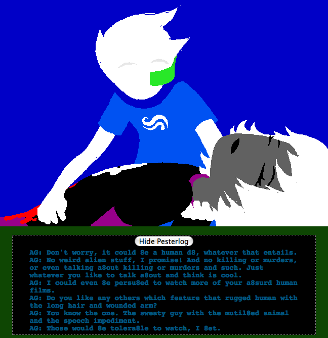
I love the juxtaposition of Vriska, who is currently dead, talking to John about dating while John is about to kiss (the corpse of) his friend (to bring her back to life). It’s sweet and sad and I love it.
So, Jack destroys the big Heroic-Just clock so that the pendulum is stuck on Just, does that mean that Vriska’s death was just and she’ll stay dead? Because I really don’t want that to happen.

GOD DAMNIT KARKAT.
So, at what point did you guys stop being annoyed at Homestuck for being so good?
Because I have yet to stop, and it’s kind of weird. It is masterfully written and that bugs the fuck out of me.
…
…
While we’re talking meta, I feel kind of bad for all of you following me, because I sure spam the shit out of your dashboards when I’m liveblogging.
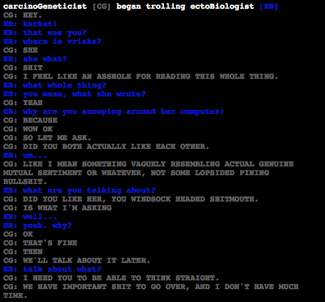
Oh my god Karkat.
If Vriska doesn’t live through this, I want someone to go slap Karkat for being such an ass right now.
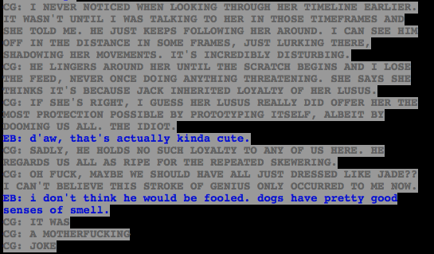
I basically stopped liveblogging for a huge hunk of this because it was so exciting I couldn’t stop to take a screenshot and make a comment.
I keep thinking about this and trying to figure it out!
My impulse is to say, duh, chaos theory says everything will be different. They’ll probably all be lizard people or something because tiny change in evolution four billion years ago! But narratively I’m guessing a lot will be the same, with slight tweaks.
Most likely I’m guessing that the trolls won’t be involved, since we know they don’t enter it as gods after the scratch and we haven’t gotten any hints that they’ve interacted with the alternate-Earth, which means anything that stemmed from the trolls’ interaction with the kids and Earth will be different. But it’s also really hard to pin down because it seems like everything in this story isn’t cause-effect it’s effectcause and causeeffect, like both are the same and events are circles without beginnings or ends.
Also my memory sucks for what was caused by what, not that you could separate anything out anyway.
But, for ease and for what I’m guessing is the narrative direction, I’m guessing that there will be slight differences with the guardians, and the kids. And I’m going to label these all as guesses so I’m not going X will probably, I am guessing Y…
Bec won’t be around, or if he is, he’ll be a regular dog, and alt!Jade’s guardian is going to be someone else, like her grandfather. The first guardian will be more like Doc Scratch, someone enigmatic and vaguely threatening. The alt!kids are also going to all have different strengths and weaknesses, alt!John will be a jerk who pulls pranks that everyone hates, alt!Dave will be really socially awkward, alt!Rose will be an apathetic valley-girl, alt!Jade is going to be an insomniac. Alt!Rose will also have a much closer, more supportive relationship with her mom, and they will try to one-up each other with genuine displays of affection instead of sarcastic ones.
If it gets far enough, I think we’ll see the alt!kids playing more hardcore and taking things really seriously. But ultimately the session will be doomed to also bear no fruit, for whatever reason caused the current one to be barren.
Also, everyone will like Betty Crocker.

I BET IT’S THEIR ANCESTORS!
Although if it was, that would be really weird. Because their ancestors are creepy adults who are in some parts responsible for killing each other, which is a troll thing so I don’t know what it would be like for a troll to meet someone they killed in the afterlife, and we really don’t know what it’s like for adult trolls to interact with child trolls, so everything is pure conjecture even if my guess is right.
Also I am suspicious of Jade’s dream knowledge, since her dream self died. But maybe she’s getting information from Feferi and them, and of course last we saw she was with Aradia, and Aradia knows things.

Well, I guess that torpedos my assumption that the new session would be unaffected by the kids or the trolls. Except now it will be direct instead of indirect.
I’m hoping that the new session will be driven with the intent to eventually destroy Skaia and the game, the way Rose intended to way way back. It seems about right, Skaia is responsible for destroying a lot of worlds and fucking up a lot of people’s lives. Jack’s rapid acquisition of power and penchant for destruction kind of distracted us from that point, but if Jack is neutralized we can go back to Skaia being the ultimate enemy.

GODDAMNIT KARKAT. Tell us what you know! I am getting really worried that Vriska will be permanently dead and we won’t get to see her again.
I don’t know at what point the Horrorterrors started influencing her to the point of controlling her opinions, but I was basing my opinion on Skaia on the end of Rose’s gameFAQ. This is the second ask I’ve gotten disagreeing, so maybe I missed the point somewhere?
But Rose also talked in general about fucking up the game, so even if the enemy isn’t “Skaia” I want to see the enemy be the game.
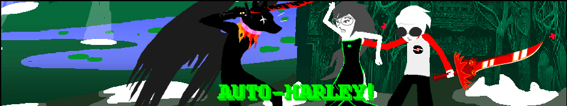
JADE SHIELD!
Good job, Dave, hiding behind the little lady. (Who carries a machine gun.) Poor Jack can’t do nothing to her.

Oh shit oh fuck oh shit.
Daaaave. No, Dave. :( Jack, you fuckass, I hate you. Poor Jade, when she sees this in a minute.
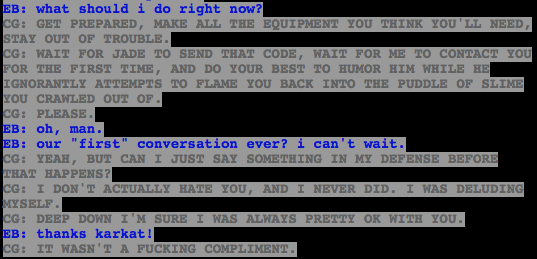
OH EM GEE!
Man, I love the temporal shit here. I was just wondering how the current conversations fit into the past ones, and I’ve been thinking about their first conversation, where John talks about Karkat’s plan and says they’re going to meet soon, and here is the plan, with a reference to that very conversation! Suddenly everything fits together so nicely, it’s a good feeling.

I’m not sure why this picture is so sad to me, but I am totally heartbroken over it. Poor Vriska. She just keeps screwing up and bad things keep happening. And now she’s maybe dead and this John doesn’t even know he likes her back yet.
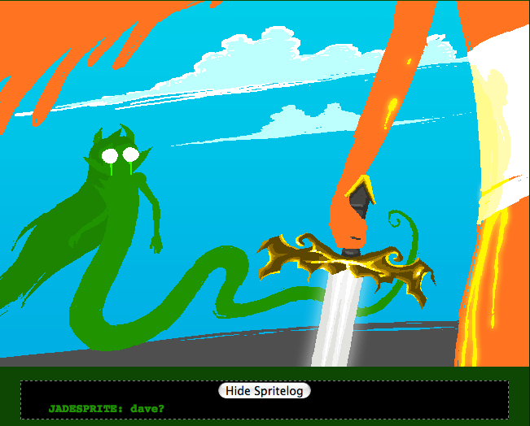
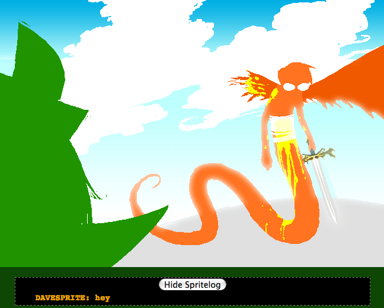
*hums One Winged Angel*
I wish there was more to this exchange! It’s adorable. Yay, Jadesprite might be happy!
I dislike not being able to look and see who will live and who won’t. I guess I could, but I don’t want to risk spoilers for things other than whether or not the character is going to live through this or that. I was always checking as I read through A Song of Ice and Fire, just because the wondering and not knowing sucks so much.
And I don’t have any feeling for whether or not Hussie likes to kill characters. I have the feeling that he likes high stakes, but also that for him high stakes might not equal permadeath for everyone, like, say, GRRM. Which I think is awesome–right now there’s such a trend of increasing the stakes by letting any character get killed, and sometimes that’s valid, but sometimes it just makes me more wary of getting attached to characters because fuck, I liked them and now they’re gone, and sometimes it makes the deaths less significant, because well who cares if a main character dies if main characters are dropping like flies? *cough*AttackonTitan*cough* Even with Harry Potter, the fact that the last book ended with a lot of deaths didn’t have much effect on me, because we never saw the characters really deal with what being a child soldier would do, and fighting for your life would mean for everything that happens after, even if I loved a bunch of the characters who died, I just don’t much care.
I get the feeling that Hussie won’t be doing that sort of thing, going forward. So I’m not sure if Feferi, Eridan, Nepeta, Gamzee, Equius, Tavros, and Vriska are permadead, and I figure some of them definitely aren’t (I believe Vriska said that Gamzee isn’t dead at all, at least?), but I also feel like Hussie can raise the stakes for the characters without bringing mortality into it all the time. Raising the stakes via breaking relationships, changing characters’ perceptions of themselves, and generally just causing suffering are, to me, way more interesting than just seeing characters die off. I’d rather see two characters suffer emotionally because of something that they did, than see one character suffer because another died. So when I hope that someone doesn’t die or doesn’t stay dead, it’s as much just that not dying can be more painful than dying than that I like the character.
I mean, I’d really like to see Tavros deal with the fact that he is cowardly and spineless and let Vriska does by failing to kill her when by all means that was the absolute right thing to do. I’d like to see Vriska come back and deal with the fact that Terezi killed her.


So this is from a bit ago, but I just figured out what Doc Scratch was talking about. The combination of Scratch talking about kissing, while the kids and trolls were kissing, confused the heck out of me. I thought it was related, and not about Jack kissing Snowman.
Doc’s emotional reaction seems kind of weird to me. Like, he knew it was going to happen, he’s probably known it was going to happen for forever, how does he get so mad about it? You’d think omniscience would take the oomph out of most emotions.


IRONIC DREAMING. LIFTING FREUDIAN THEORY FROM DISCREDITATION. BLACK SCREAMING SKY DONGS. ROSE’S MOM’S, WHO IS ALSO DAVE’S MOM, UNDERWEAR. OEDIPUS REFERENCE!
Guys I love this conversation so much I don’t know what to do with it. It’s literally piles of Freud jokes on top of metaphors about time travel. The only way this could be better is if Dave made a joke about Rose having penis envy, to top off the Freud trifecta.

OH SHIT GUYS. I knew John giving the wallet with the Tumor to someone else was a terrible idea! Fucking WV, don’t you know that wallets go in the side pocket, not the back one, so they’re harder to steal? Especially when you’ve got a goddamned bomb in it!
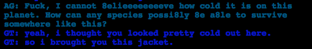
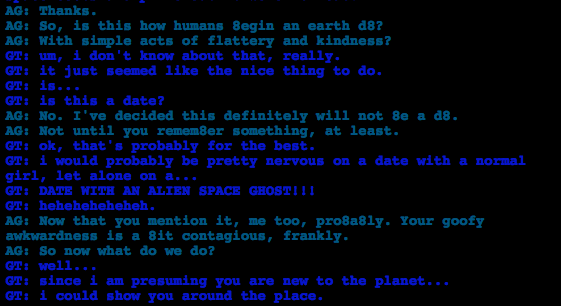

Guys this is so fucking cute it is physically painful. I am in pain over how cute these two are. John is such a sweetie pie and Vriska so badly needed someone to be unconditionally nice to her. I know I said I don’t much care for romance but aaaaaaaaw!

Dear sweet lord, are those Tavros’s legs?
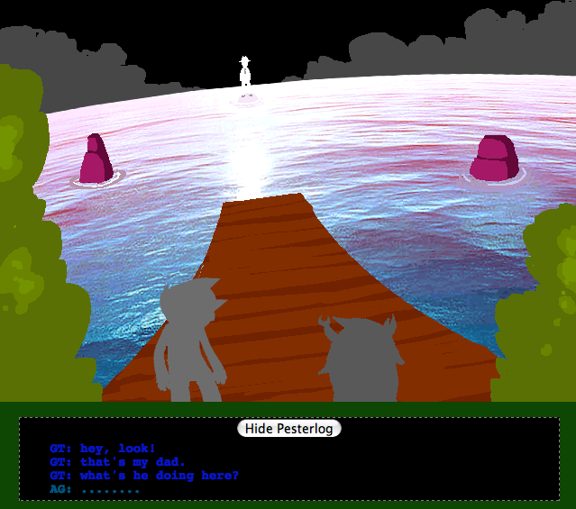
This is super pretty and also horribly painful. John, you poor bb. I want to just wrap him up in a blanket and tell him everything will be okay. He’s 13 and he’s already got terrible adult responsibilities, it’s not fair. :(

WHY DO BAD THINGS KEEP HAPPENING? WHY DOES THIS HURT SO MUCH?
God, fuck it, I should just go do more physics homework if this is all just terrible anyway.
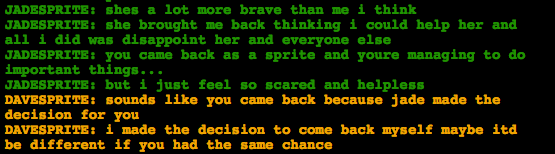
Clearly I have entered Hurtstuck because all of this suuuuucks.
Davesprite is such a sweetie, though.

FUCK YES LIV TYLER GOT THE BOMB.

Oh my god Rose, stop being so pretentious and condescending!
Like it’s anti-social to let fate go ahead and have Jade not-kill him, anyway. That makes no sense, if anything Dave has got some depression, maybe dysthymia, going on, and he’s definitely got a suicidal side.
In a different world he probably shouldn’t have let Jade not-kill him, but I’m trusting that the Knight of Time knows what he’s doing when it comes to changing future events.
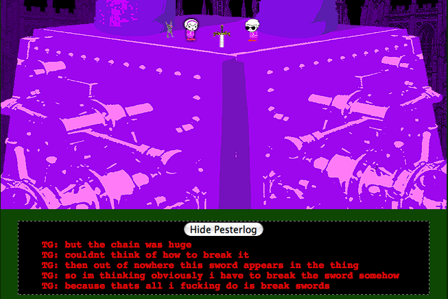
Since we just talked a lot about Freud, suddenly the sword breaking habit is a bit different. Swords are very phallic, after all!
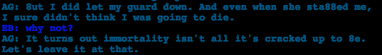
Of fuck, it’s looking more and more like Vriska is permadead. And that is terrible and I do not want it.
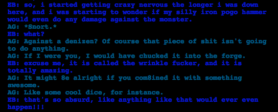
I smell foreshadowing! We know that Vriska sent John the codes for her dice before she died, and now she’s saying he should combine his hammer with dice!

!!!!!!!
Betty Crocker wasn’t human?! Then wtf was she?


Oh shit oh shit oh shit oh shit.
Oh, WV. I mean, I know you keep the ring, but that’s not good.